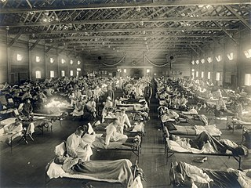
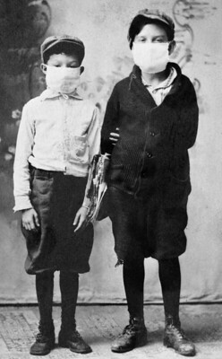

Past Flu and Present Pandemic
Comparing the COVID-19 and 1918 H1N1 Viruses
By: Sunay Dagli, Jasmin Joshi, Daanesh Jamal
August 15th, 2020

Masks being mandated, businesses closing, and United States governors sounding the alarm of ‘safer at home’. Coronavirus? No. These responses were actually first enacted over a century ago to combat a different virus: H1N1.
The novel coronavirus eerily mirrors a pandemic of the past: the 1918-1920 H1N1 pandemic. At that time, our county was already fighting in World War 1. However, another conflict sparked -- this time with an invisible enemy, arguably the hardest type of enemy to combat. Little did we know, the world would be facing a similar destiny over a century later. Although technology has largely improved from the early twentieth century, our country is yet again propelled into an unexpected war: a war with an invisible enemy, a war where we do not have enough armor, a war that unites the world against a common enemy, a war that destroys and forces mankind to reimagine the world, and a war we yet have to prevail in as the declared winners.

These two diseases paralleled each other, although the H1N1 pandemic was significantly more dangerous than COVID-19. Both are highly contagious, viral diseases hypothesized to have an avian origin, affecting people from around the globe, and the United States in particular. In the months that coronavirus has spread, there have been 13.8 million cases with almost 600,000 deaths. The mortality rate was around 0.2 to 1%, but the virus can cause permanent damage to the body, such as lung scarring, which does not heal easily. The H1N1 virus, on the other hand, infected over 500 million people, at the time almost a third of the world’s population, killing 20 to 40 million people. This resulted in a 1 to 4% chance of death with high morbidity, which means symptoms stay for a long time.
The significant increase in cases for the H1N1 virus can be partially attributed to the end of World War I. Crowded military camps allowed the virus to spread easily as soldiers took the disease from the battlefields of Europe to nearly every nation on Earth. Additionally, celebrations of Armistice Day with parades and parties that the public health did not stop accelerated the distribution of disease. A clear case was seen between St. Louis, who obeyed all public health recommendations including cancelling a large parade, and Philadelphia, which ignored the demands of experts. This led to a striking contrast where St. Louis experienced one-eight of the flu related fatalities that Philadelphia did. Moreover, medical technologies like antibiotics, sanitation, and viral testing were not as developed as today, and there was a lack of healthcare professionals and people due to wartime demands.

Coronavirus spreads through similar means as H1N1: crowds of people and not social distancing. People not wearing masks and disregarding recommendations set in place because of the H1N1 disaster are reasons the airborne viruses still spread so rapidly today, as well as a lack of proper resources for healthcare officials.
Stricter responses to H1N1 were only enacted after the death of hundreds of thousands of people. Professionals distributed gauze masks, closed public institutions, banned public gatherings, and closed schools. Quarantine became mandated along with isolating those that were ill. A large campaign to teach more about general hygiene, cleaning properly, social distancing (even in the military where they were mandated to eat 5 feet apart), sterilization, was held to educate the public, especially rural communities, about these preventative measures.
Though scientists identified today’s pathogen as a “novel coronavirus”, what H1N1 teaches us is that coronavirus is truly nothing new. We have been here before: an era of mass destruction and mass infection where the souls of suffering men fall upon deaf ears. We can try to quantify the damage with statistics and graphics, but in a larger sense, the overwhelming loss of life caused by COVID-19 and H1N1 is incalculable. How do we quantify the pain of the husband who loses his wife, the community that loses a family, and the nation that loses an entire generation? We must open our minds and ears to the grave reality of the pandemic, accept basic, common sense habits like wearing a mask in public, avoiding large gatherings, and jealously guarding our hygeine. It is a cliche, but the old adage bears repeating: those who ignore history are doomed to repeat it. We must take and apply the lessons of history now before we doom hundreds of thousands of lives to easily preventable deaths.
Authors
- Sunay Dagli is a second year student at UC Berkeley studying Energy Engineering. For any inquiries or opportunities, please contact him at sunaydagli@berkeley.edu.
 Jasmin Joshi is a second year student at the Claremont Colleges in the joint medical degree program. Feel free to contact her at jasminpjoshi@gmail.com!
Jasmin Joshi is a second year student at the Claremont Colleges in the joint medical degree program. Feel free to contact her at jasminpjoshi@gmail.com! Daanesh Jamal is a rising freshman at Rice University and will major in Philosophy/Pre-Law. For any questions, comments, or concerns, please contact him at dhj1@rice.edu.
Daanesh Jamal is a rising freshman at Rice University and will major in Philosophy/Pre-Law. For any questions, comments, or concerns, please contact him at dhj1@rice.edu.
Sources
- https://virus.stanford.edu/uda/
- https://www.cdc.gov/flu/pandemic-resources/reconstruction-1918-virus.html
- https://www.arcgis.com/apps/opsdashboard/index.html#/bda7594740fd40299423467b48e9ecf6
- https://www.theatlantic.com/ideas/archive/2020/03/how-fragmented-country-fights-pandemic/608284/